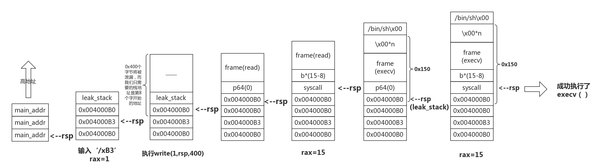

srop主要学习来源来自 ctf-wiki上的介绍：
https://ctf-wiki.github.io/ctf-wiki/pwn/linux/stackoverflow/advanced-rop-zh/#srop
原理、exp和题目不想做搬运，里面都可以找到
这里主要谈一下自己的心得：现附上一张图

这个是根据ctf-wiki上的exp构造的栈空间的流程，可以发现大概利用流程就是通过read读入字节数的返回值修改rax，再将sigframe结构体写入栈中，再通过read读取syscall至返回地址，拼接字节使其返回值为15，从而执行sigreturn，又因为sigframe设置rip为syscall再次调用,执行execve(‘/bin/sh’,0,0)
由于直接将返回值改为syscall,会破坏rsp，无法继续read sigframe,所以采用两次读取sigframe，第一次目的是将rsp置为原址，并将返回地址main和第二个sigframe读入栈中，然后回到main执行read(0,rsp,0x400)，置rax为15，即可getshell
注意：一定要加上context.arch = ‘amd64’，关系到SigreturnFrame()的内容
接下来是实战了一道例题：ciscn_2019_es_7，buuoj上有题目复现
其中提供了方便利用的gadget
1 | .text:00000000004004ED ; __unwind { |
1 | .text:00000000004004D6 gadgets proc near |
由于这道题不知道怎么使用execve，就直接运用sigreturn来做了
主要利用过程就是先得到栈地址，由于返回地址要覆盖成read，所以只能找到一个栈空间下面的一段偏移，题目未开启pie则可以通过计算找到binsh字符串，然后就是写入sigframe，再利用给的gadget将rax设置为15即可
exp如下：
1 | from pwn import * |